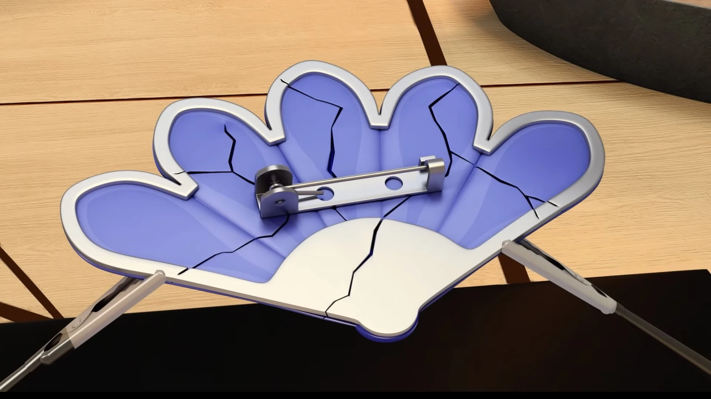

The main lore of Miraculous Ladybug is Gabriel’s. Gabriel Agreste
and his wife Emily Agreste had a cute son named Adrien Agreste. However,
on a trip, they found the miraculous of the butterfly and the miraculous
of the peacock. They didn’t know that the miraculous of the peacock was
broken and Emily used the miraculous. She soon grew ill and went into a
coma. She hasn’t come back to life in the past 14 years and right now
Gabriel is trying to get the miraculous of creation (ladybug) and the
miraculous of destruction (black cat).
It turns out that Felix was a senti-monster this whole time. Felix is not a
real human, but in fact a senti-monster that has been created by his father.
Since his father used the peacock miraculous, he also eventually passed away
because he grew sick. The reason why Felix was created was because the parents
of Felix soon realized that they can not have a child, so his father created one.
Since his father fell ill, his father always saw him as a monster because his
father believes the fact that the only reason why he grew ill was because he
used the peacock miraculous to create Felix.
